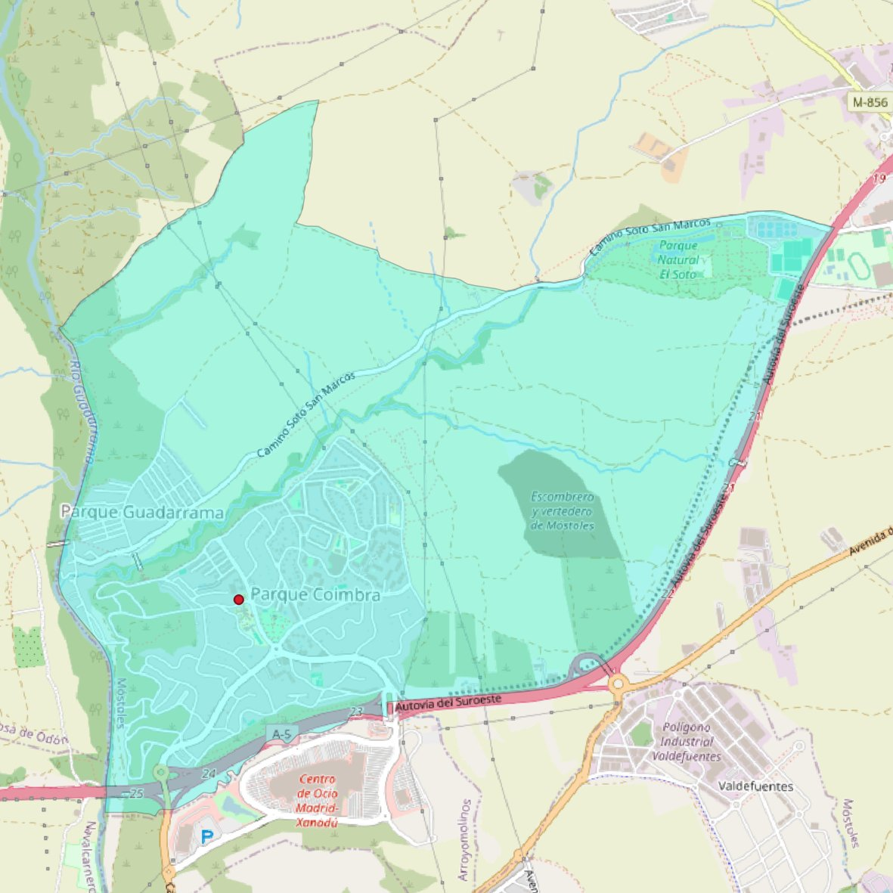

Móstoles · Arciprestazgo de Móstoles · Diócesis de Getafe

De cada 100 habitantes, 19 tienen menos de 18 años, 16 tienen 65 o más y 17 han nacido en otro país.
| Parroquia | Arciprestazgo | Diócesis | |
|---|---|---|---|
| Habitantes (2025) | 12.500 | 214.293 | 1.729.840 |
| Habitantes por km² | 1.110 | 4.867 | 751 |
| Edad media (2024) | 41,1 años | 44,5 años | 42,3 años |
| Menores de 18 (2024) | 18,8 % | 15,9 % | 18,2 % |
| 65 o más (2025) | 16,1 % | 23,2 % | 18,4 % |
| Índice de envejecimiento (2025) | 112 | 180 | 127 |
| Nacidos en otro país (2025) | 17,2 % | 20,4 % | 20,3 % |
| Renta por persona (2024) | 17.000 € | 14.900 € | 16.000 € |
| Personas por hogar (2024) | 3,18 | 2,73 | 2,80 |
| Hogares de una persona (2024) | 12,6 % | 21,1 % | 21,0 % |
| Estudios superiores (2024) | 37,0 % | 28,4 % | 32,4 % |
| Paro (2024) | 9,1 % | 9,7 % | 9,1 % |
No hay en esta web ningún desarrollo urbanístico previsto en el territorio de la parroquia.